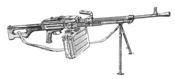
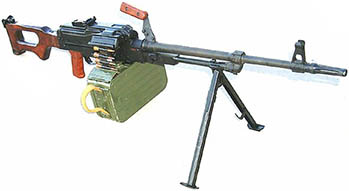
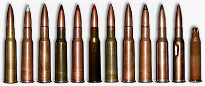
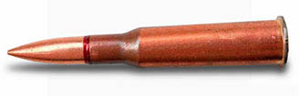
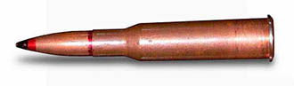
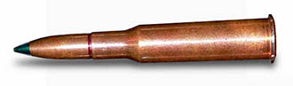

ВОГНЕВА ПІДГОТОВКА - ПК(ПКМ)
ТТХ. Боєприпаси. Призначення і загальі властивості.
Призначення. Загальні відомості
7.62мм кулемет Калашнікова є потужною автоматичною зброєю і призначений для знищення живої сили і ураження вогневих засобів противника.
Стрільба (режим стрільби) ведеться:
- короткими чергами (до 10 пострілів);
- довгими чергами (до 30 пострілів);
- безперервно.
Автоматична дія кулемета заснована на використанні енергії порохових газів, що відводяться з каналу ствола до газового поршня затворної рами.
При пострілі частина порохових газів, що діють на кулю, спрямовує через отвір у стінці ствола в газову камору, давить на передню стінку газового поршня і відкидає поршень із затворною рамою в заднє положення. При відході затворної рами назад відбувається відмикання затвора, витяг гільзи з патронника і вона викидається з ствольної коробки назовні, витяг чергового набою зі стрічки і подача його в подовжнє вікно приймача, переміщення стрічки в приймачі вліво на одну ланку і стиск зворотно-бойової пружини.
Відмикання затвора здійснюється поворотом його під дією затворної рами навколо подовжньої осі ліворуч, у результаті чого бойові виступи затвора виходять через бойові упори ствольної коробки. Затворна рама в крайньому задньому положенні вдаряється об обмежувач і під дією зворотно-бойової пружини починає рухатись вперед. Якщо спусковий гачок (кнопка електроспуска) натиснутий, тоді затворна рама з затвором, не затримуючись шепталом спускового важеля, продовжує рухатись вперед, досилачем затвора виштовхує патрон із подовжнього вікна приймача і досилає його в набійник, зачепи витягача захоплюють черговий набій у стрічці, а палець подачі переміщається праворуч на одну ланку стрічки. При підході затворної рами в крайнє переднє положення відбувається запирання затвора і розбиття капсуля набою бойком. Запирання затвора здійснюється його обертом навколо подовжньої осі праворуч, урезультаті чого бойові виступи затвора заходять за бойові упори ствольної коробки. Ударник під дією кільцевий проточки затворної рами просувається вперед і бойком б’є по капсулю набою.
Відбувається постріл, і робота автоматики кулемета повторюється.
ТТХ
|
Характеристика |
ПК |
ПКМ |
|
Калібр |
7.62х54 |
7.62х54 |
|
Прицільна дальність |
1500 м |
1500 м |
|
Дальність ефективного вогню |
1000 м |
1000м |
|
Дальність прямого пострілу по грудній фігурі (висота 50 см) |
420 м |
420 м |
|
Якому прицілу відповідає показчик «П» (постоянка) |
3 |
3 |
|
Боєкомплект |
-при зброї 600 шт - загалом 2000 шт |
|
|
Ведення беззупинноговогня |
500 постр |
400 постр. |
|
|
|
|
|
Початкова швидкість кулі |
825 м/с |
825 м/с |
|
Убойна дальність |
3800 м |
3800 м |
|
Максимальна дальність польоту кулі |
3800 м |
3800 м |
|
Бойова швидкострільність |
250 п/хв |
250 п/хв |
|
Вага |
9 |
7.5 |
|
Вага коробу з патронами: на 100 патронів на 200 патронів на 250 патронів |
3.9 кг 8 кг 9.4 кг |
|
|
|
|
|
|
Габарит пристрілочної мішені: Висота Ширина |
35 см 25 см |
|
|
Приціл при пристрілювнні |
3 |
|
|
Відстань до мішені |
100 м |
|
|
Віддалення контрольної точки над точкою прицілювання |
15 см |
|
|
Діаметр кола норми кучності |
15 см |
|
|
Допустиме віддалення в будь-якому напряму СТВ від КТ |
5 см |
|
|
Зміна СТВ при переміщенні мушки: -на 1 мм вліво (вправо) -на 1 оберт по висоті |
15 см 12 см |
|
Боєприпаси

7,62-мм винтовочный патрон с пулей со стальным сердечником ЛПС
Патрон с легкой пулей со стальным сердечником (ЛПС) разработан. Для поражения живой силы, расположенной открыто и за преградами, пробиваемыми пулей, и небронированной техники. Возможно применение из всех образцов оружия, предназначенных для стрельбы 7,62-мм винтовочными патронами с обыкновенными и специальными пулями
7,62-мм винтовочный патрон с бронебойно-зажигательной пулей Б-32
Патрон состоит из гильзы бутылочной формы с выступающей закраиной (фланцем), пули, капсюля-воспламенителя и метательного заряда. Пуля состоит из биметаллической оболочки, свинцовой рубашки и стального закаленного бронебойного сердечника. В головной части пули вместо свинца помещен зажигательный состав. Схема работы пули: в результате резкого торможения пули при попадании в твердую преграду стальной сердечник, двигаясь по инерции, сжимает и воспламеняет зажигательный состав. Разрушив оболочку, сердечник пробивает преграду и затягивает зажигательный состав в пробоину.
Для поражения легкобронированных целей и поджигания горючего, находящегося за пробиваемой броней или
в толстостенной таре.
Поджигает бензин Б-70
Возможно применение из всех образцов оружия, предназначенных для стрельбы 7,62-мм винтовочными патронами с обыкновенными и специальными пулями
7,62-мм винтовочный патрон с трассирующей пулей Т-46
Пуля состоит из биметаллической оболочки, свинцового сердечника, биметаллического стаканчика с воспламенительным и трассирующим, специально разработанным для этой пули, составами и колечка.
Служит для корректировки огня, сигнализации и поражения живых целей.